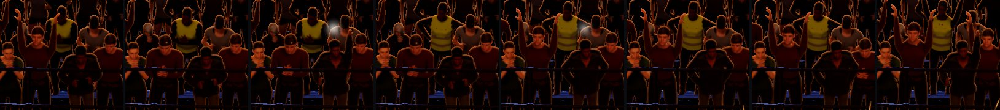
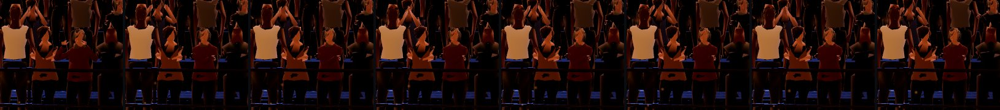

Option C, the owner's pick: real 3D people on the rows by the rail, a dark broadcast house behind them, blended so there is no line where one ends and the other starts. It is now the default in every venue and on the arena menu stage. Branch wave-c-crowd.
Every clip is 3 seconds of the running game at 15 fps, captured at the same fight moments as the "before" clips from 28 September. A big hit fires one second in. The fight itself is untouched: its hash is identical with the crowd on, off or at any tier.


The quality tier picks how much of the house is 3D. High is C as designed; medium keeps only the front row as 3D people with the dark house behind; low is the broadcast house alone (cards, no specks, thinner).
The Yard's north stand when the judges' decision lands (the call comes at 1.3 s into each clip). In the game this happens after the fight, when the arena is quiet; in these captures the fight is still running, so a few people react to it as well.
react("cheer"). Arms up across the house, phones out, longer hold.react("boo"). Fists out and down, heads shaking; some cover their faces.Desktop render info for the same frames (whole frame), plus the crowd's own numbers. Device timing is owed (below).
| Tier | 3D people (Yard / Coliseum / Grinder) | Frame triangles, wide shot (before, high tier: 120k / 71k / 84k) | Draw calls added | Animation | Video memory |
|---|---|---|---|---|---|
| High | 203 / 271 / 94 | 317k / 313k / 175k | about +30 (24 bodies x 2 detail levels, only those in view) | 4 to 8 texel fetches per vertex; stand sides behind the camera are skipped | +12 to 14 MB (the motion texture, 2048 x 1392, and the people meshes) |
| Medium | 34 / 45 / 28 | 154k / 117k / 111k | up to +24 | as high, for the front row | the same (it loads with the first 3D person) |
| Low | 0 | 118k / 68k / 83k | +1 (flags) | cards only, as before | +0 |
The medium and low rows are whole frames at that tier (the rest of the venue kit thins too), so compare them with each other rather than with the high-tier "before". Stand shots drop further with the side culling: Coliseum high 313k (wide) to 212k (stand) to 162k (close). Each 3D person is about 1,000 triangles near the rail and 260 to 320 deeper in; far detail levels share the same motion texture.
App size: +2.26 MB (motion texture) +0.27 MB (people resource) and -1.53 MB (the unused stylised atlas now left out of the export): about +1.0 MB net.
VenueCrowd.react(kind, strength = 1.0, origin = null) with kind "hit", "cheer", "boo" or "flinch"; origin in world space, null = the arena centre. Through the kit: VenueKit.on_crowd_reaction("verdict_clear") and ("verdict_close") map to cheer and boo. The staging API (stage(dict)) is unchanged. Details in docs/wave-c-crowd-notes.md.
Owed: frame time on the iPhone 18 Pro Max in the Coliseum at the high tier. The app has no launch flag that puts a fight in the Coliseum and no on-device frame time log, and installing this unmerged branch would replace the owner's current build; the recipe is in the notes. Also owed: the seated clip is only used by the few people scattered into the dark house (seated people in the standing rows pushed their legs through the row in front).